Welcome to Lesson 2
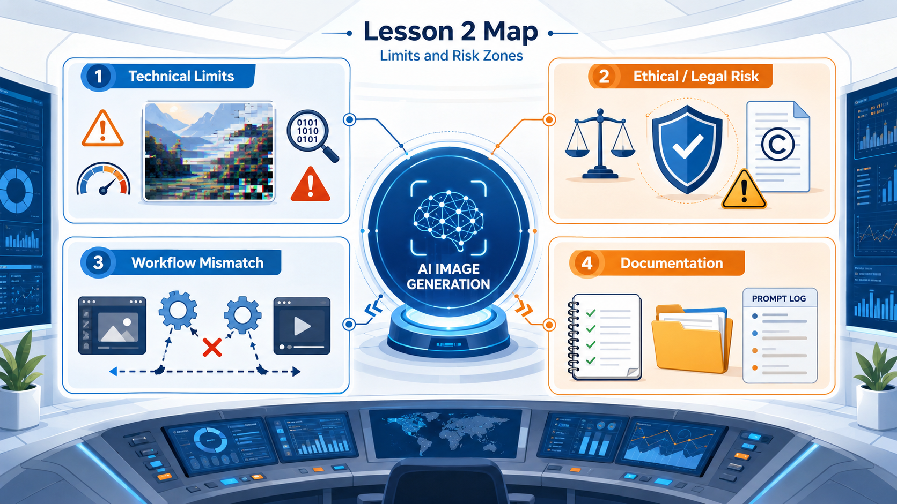
In Lesson 1, you explored how AI image generation translates human intention into machine interpretation. In Lesson 2, you become an AI image failure detective: you will intentionally create difficult prompts, inspect what breaks, classify the type of problem, and choose a responsible next step.
1. Break it
Generate prompts that are likely to fail: counting, hands, text, and impossible scenes.
2. Diagnose it
Classify each problem as technical, ethical, legal, interface-related, or workflow-related.
3. Repair it
Choose a better prompt, tool, or workflow instead of randomly regenerating.
Learning Objectives
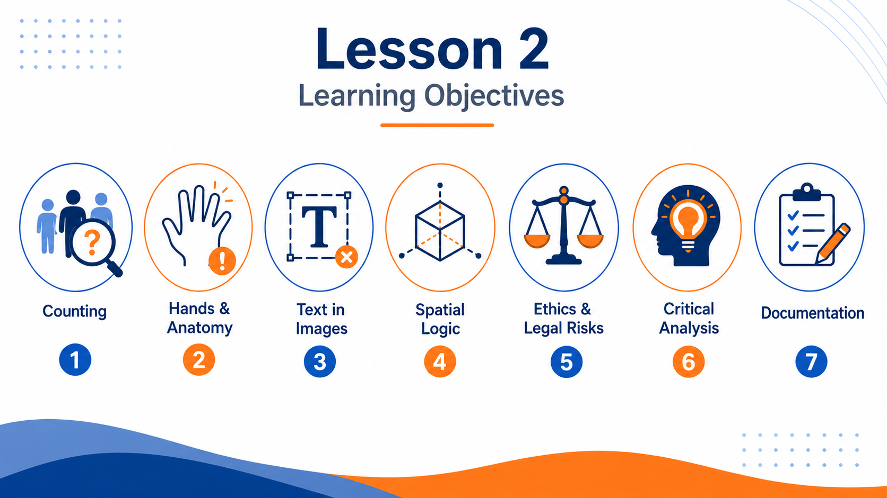
By the end of this lesson, you will be able to:
- Identify common technical limitations of AI image-generation systems, including counting, hands, text, and spatial logic.
- Explain why AI models may produce convincing-looking but incorrect or distorted visual results.
- Distinguish between prompt ambiguity, technical limitation, interface limitation, workflow mismatch, and ethical or legal risk.
- Recognize basic legal and ethical issues related to copyright, commercial use, styles, artists, brands, bias, representation, deepfakes, and misinformation.
- Analyze AI-generated images critically instead of judging them only by surface attractiveness.
- Propose practical workarounds when a generative system fails or when a request is unsuitable for AI generation.
- Document failures, revisions, and decisions as part of a controlled creative process.
Mission Map: From Failure to Workflow
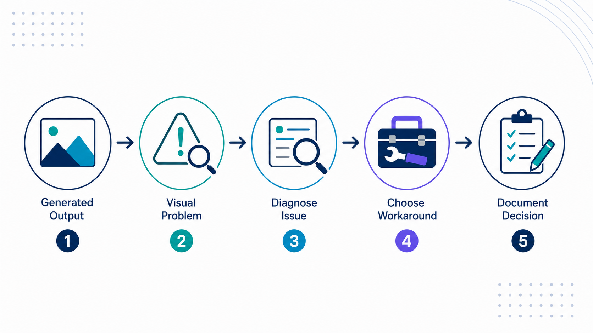
Lesson 2 is organized as a sequence of mini-missions. Each mission asks you to interact with the content, classify evidence, and make a decision.
Technical limits
Counting, hands, text, and spatial logic.
InspectRisk limits
Copyright, brands, artists, identity, bias, deepfakes.
DecideWorkflow limits
When the tool is being asked to do the wrong job.
RerouteDocumentation
Record prompt, tool, failure, and next action.
ExplainQuick check
Technical Limits: What Usually Breaks?
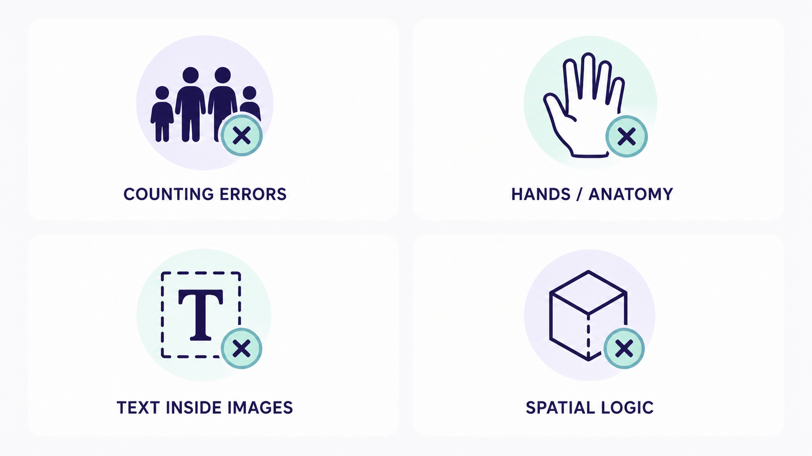
AI image generators are strong at plausible visual suggestion, but weaker at exact symbolic, anatomical, numerical, and spatial control.
Counting
Exact numbers of people or objects may be wrong.
Hands and anatomy
Fingers, joints, teeth, and object contact may distort.
Text inside images
Letters may become pseudo-text or misspelled fragments.
Spatial logic
Objects may appear in impossible positions or reflections.
Drag the missing words
Limit 1: Counting and Exact Numbers
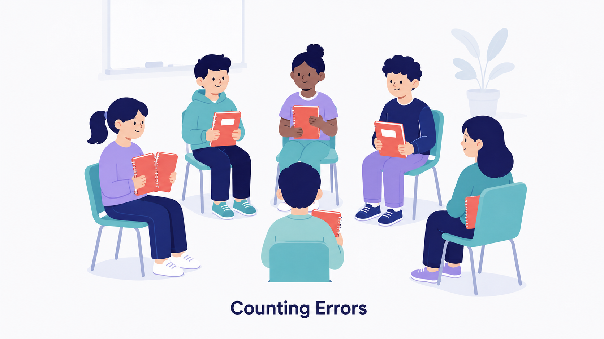
Many models can create the feeling of a group, but may not reliably produce exactly twelve students, exactly five chairs, or exactly one red notebook per person.
| Requested | Actual result | Mismatch |
|---|---|---|
| 12 students | ||
| 1 red notebook each | ||
| Circle arrangement |
Limit 2: Hands, Anatomy, and Object Contact
Hands are difficult because they have many small parts, appear in many positions, and interact with objects. Small errors are easy to notice.
Hotspot-style observation task
When your instructor inserts the image, inspect it and mark the suspicious areas on your worksheet. Use this table to record the evidence.
| Area inspected | Looks correct? | Evidence |
|---|---|---|
| Finger count | ||
| Hand-object contact | ||
| Wrist and pose |
Limit 3: Text Inside Images
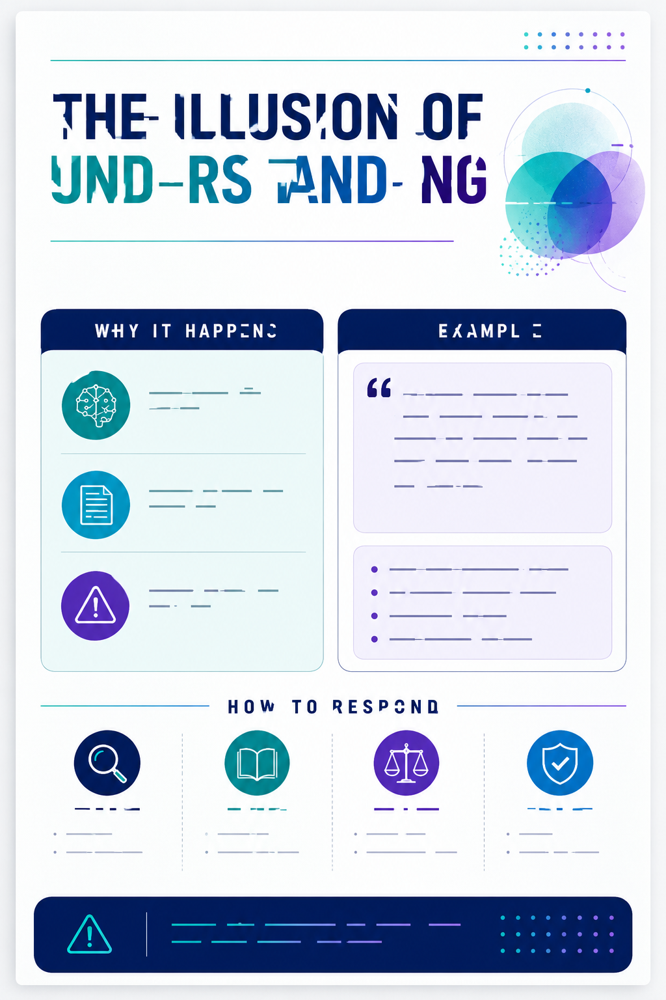
Text is symbolic language. A poster can look beautiful but fail if the title is unreadable, misspelled, or replaced with letter-like marks.
Weak workflow
Ask the image generator to create the final poster with exact long text.
Better workflow
Generate a background with empty space and add typography manually in a design tool.
Choose the safer production decision
Limit 4: Spatial Logic and Impossible Scenes
AI systems can struggle with relationships such as under, behind, inside, next to, and reflected in.
Spatial detective checklist
| Relationship | Correct? | What happened? |
|---|---|---|
| Blue cube under glass table | ||
| Behind red chair | ||
| Mirror reflection on left wall |
Activity 1 — Failure Lab
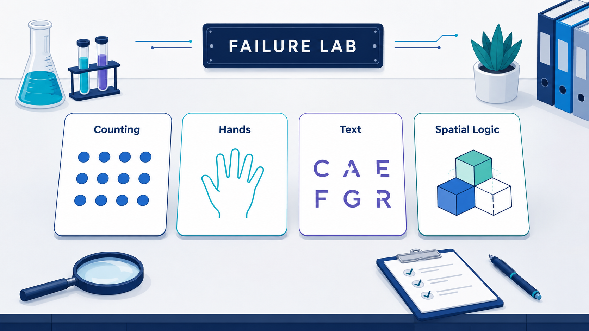
In this guided lab, you intentionally test four difficult prompts. Your goal is to collect evidence, not to create a perfect image.
Prompt A: Counting
Exactly twelve students sitting in a circle, each holding one red notebook, realistic photography.
Prompt B: Hands
Close-up photograph of a designer holding a pencil and sketchbook, realistic hands, natural pose.
Prompt C: Text
A poster that says “AI FILM FESTIVAL 2026” in large clean typography.
Prompt D: Space
A blue cube under a glass table, behind a red chair, reflected in a mirror on the left wall.
Failure log
| Prompt | What failed? | Failure type | Possible workaround |
|---|---|---|---|
| A | |||
| B | |||
| C | |||
| D |
Activity 2 — Diagnose the Failure
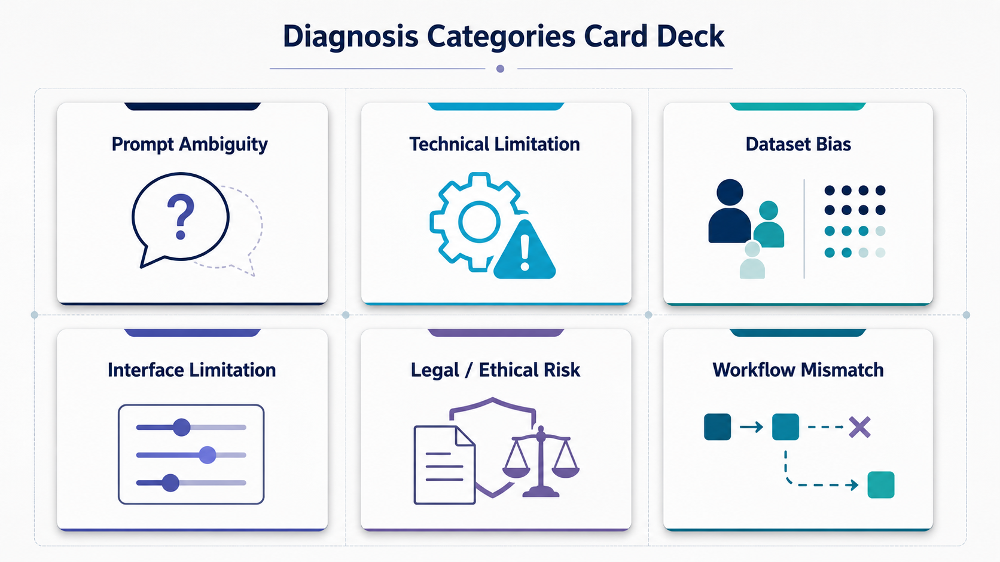
Match each situation to the most likely diagnosis. The same bad result can have different causes.
Workaround Toolkit
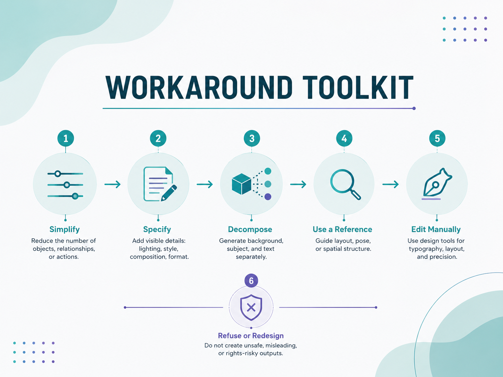
A workaround is not always a better prompt. Sometimes the best answer is a different workflow.
Simplify
Reduce the number of objects, relationships, or actions.
Specify
Add visible details: lighting, style, composition, format.
Decompose
Generate background, subject, and text separately.
Use a reference
Guide layout, pose, or spatial structure.
Edit manually
Use design tools for typography, layout, and precision.
Refuse or redesign
Do not create unsafe, misleading, or rights-risky outputs.
Workaround decision check
Ethical and Legal Limits
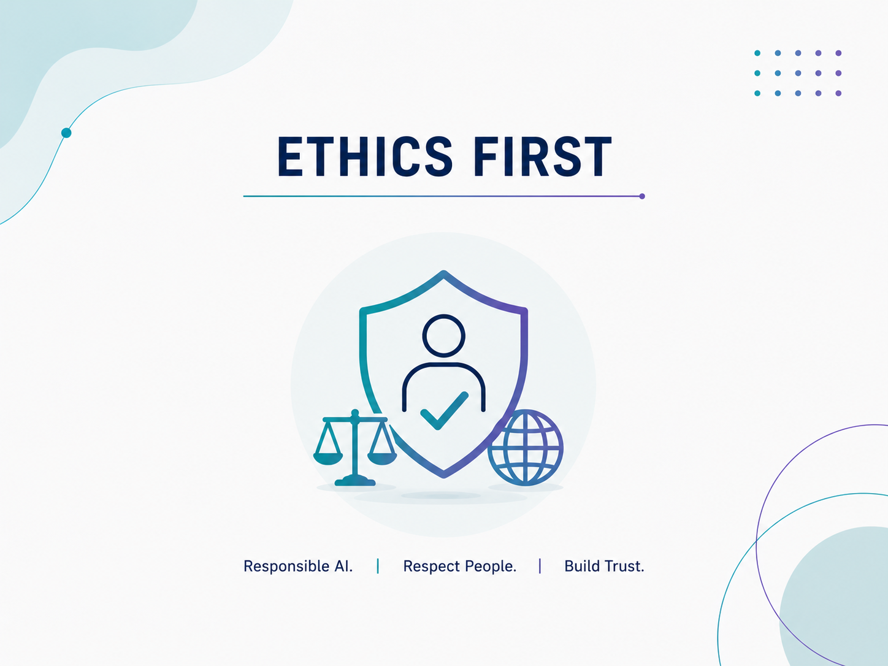
A tool may be able to generate something, but that does not automatically mean it is responsible, safe, legal, or appropriate to use.
Questions before publishing
- Does it resemble a protected brand or character?
- Does it imitate a living artist?
- Could it be mistaken for documentary evidence?
- Does it use a person’s identity without consent?
Safer habits
- Describe visual qualities.
- Use original references.
- Be transparent about AI use.
- Document prompts, tools, and decisions.
Copyright, Brands, Styles: Safer Prompting
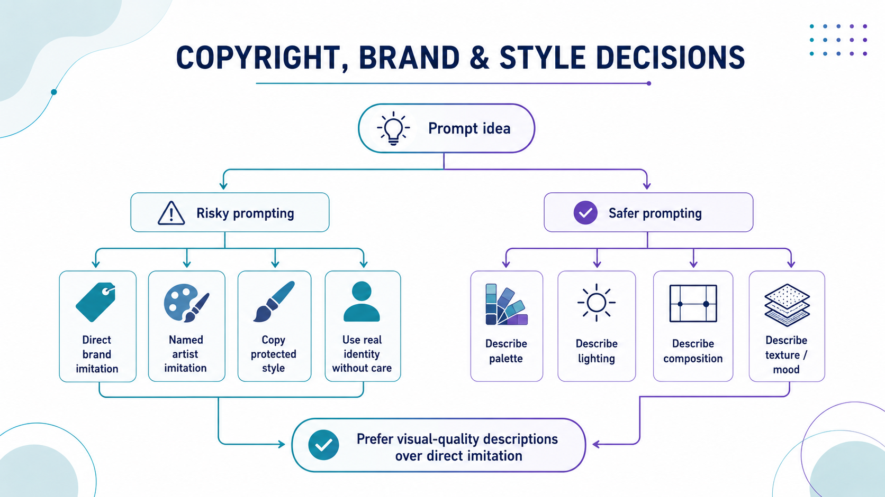
Instead of naming protected brands or living artists, describe the visual qualities you need.
| Riskier prompt | Safer visual description |
|---|---|
| “A product advertisement in the style of a famous living artist and luxury technology brand.” | “High-contrast product advertisement with bold geometric composition, saturated colors, dramatic shadows, minimal background, reflective surfaces, contemporary editorial photography aesthetics.” |
Rewrite challenge
Bias and Representation Audit
AI-generated images may reproduce dominant or stereotyped patterns from training data and cultural assumptions.
| Pattern observed | Evidence | How could the prompt or workflow improve? |
|---|---|---|
Deepfakes, Realism, and Verification
Photographic realism is no longer reliable evidence that an event happened. A realistic image can be generated, manipulated, miscaptioned, or taken out of context.
Verification toolkit
| Step | Question |
|---|---|
| Source check | Where did the image first appear? |
| Reverse image search | Does it appear in older or reliable sources? |
| Context check | Do credible sources report the event? |
| Technical check | Are anatomy, text, lighting, or physics inconsistent? |
| Plausibility check | Does the image confirm what people already want to believe? |
Quick scenario
Activity 3 — Responsible Use Scenario Challenge
Work in pairs. Read each scenario, choose the risk level, and propose a responsible next step.
Scenario A: Commercial poster
A client asks for a poster “like a famous film franchise” with the exact title inside the image.
Scenario B: Student portrait
A student wants to generate images using a classmate’s face without asking them.
Scenario C: News-style image
A viral image appears to show an explosion near a public building.
Scenario D: Classroom experiment
You generate a failed hand image only for analysis and document the problem.
| Scenario | Risk level | Reason | Responsible next step |
|---|---|---|---|
| A | |||
| B | |||
| C | |||
| D |
Activity 4 — Minimum Failure Log
Documentation makes failure useful. Record the exact prompt, tool, visible settings, and diagnosis so your next attempt is informed rather than random.
| Field | Your notes |
|---|---|
| Exact prompt used | |
| Tool and model, if visible | |
| Attempts or variations generated | |
| What worked | |
| What failed | |
| Failure diagnosis | |
| Next improvement |
Reflection Wall
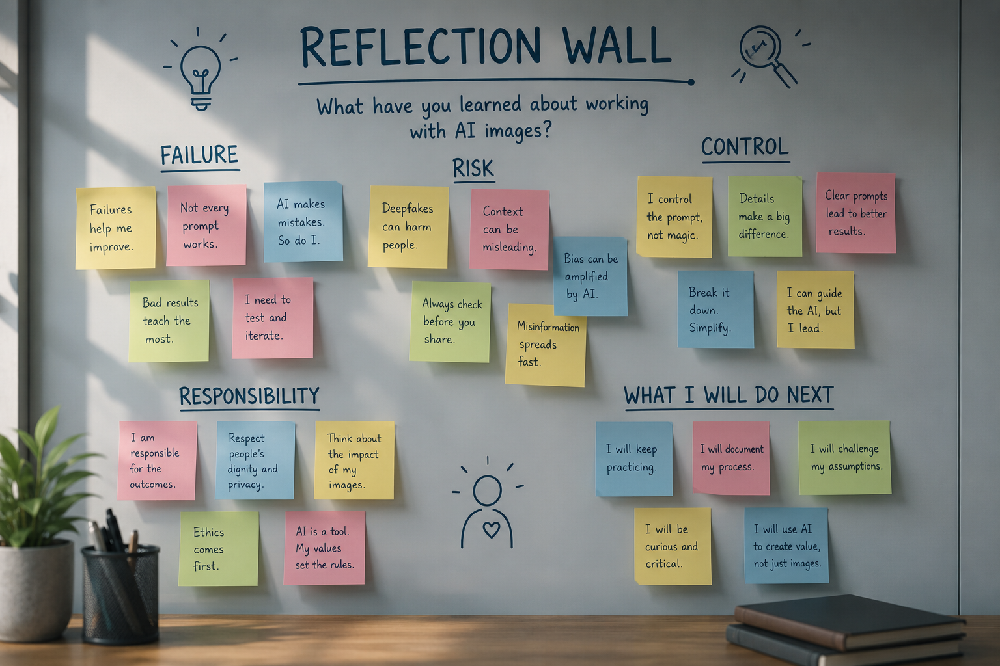
Answer the reflection questions individually, then discuss one answer with a partner.
Final Assessment
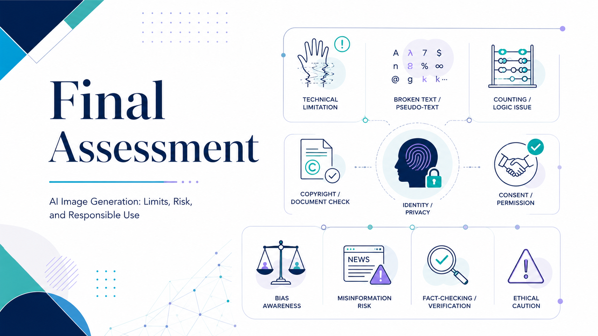
Complete the quiz and short response. You need at least 70% on the auto-scored questions to pass the SCORM assessment.
Module Summary
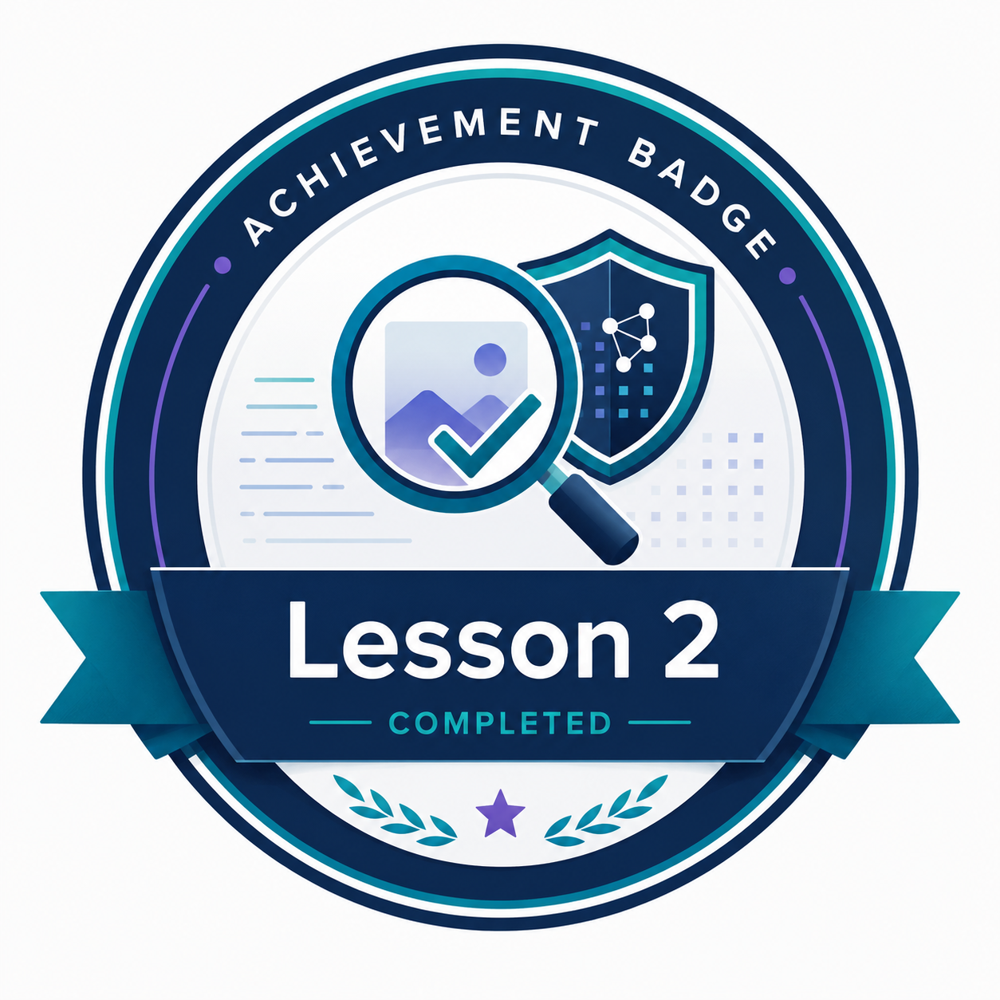
What you should take away
- AI image generation is powerful, but it has technical limits: counting, hands, text, and spatial logic.
- Not every failure is the same. Diagnose before revising.
- Some requests raise legal, ethical, identity, bias, or misinformation risks.
- A better workflow is often more useful than a longer prompt.
- Documentation transforms failure into creative control.
Next Steps
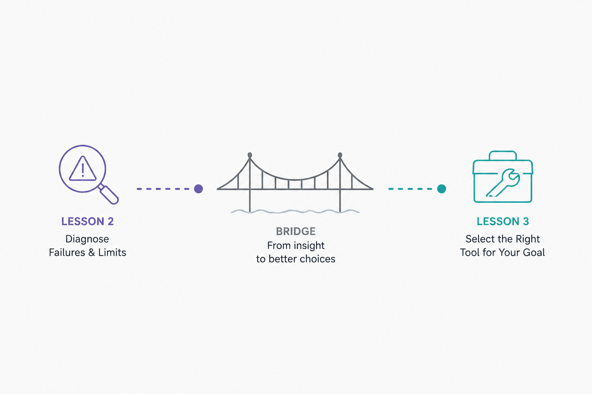
In Lesson 3, you will explore the AI image-generation tool ecosystem. Lesson 2 showed that tools have limits; Lesson 3 asks which tool is suitable for a specific creative objective.
Before choosing a tool
Ask: what do I need the tool to do?
Before trusting an output
Ask: what kind of evidence supports this image?
Before publishing
Ask: is it responsible, accurate, and rights-aware?